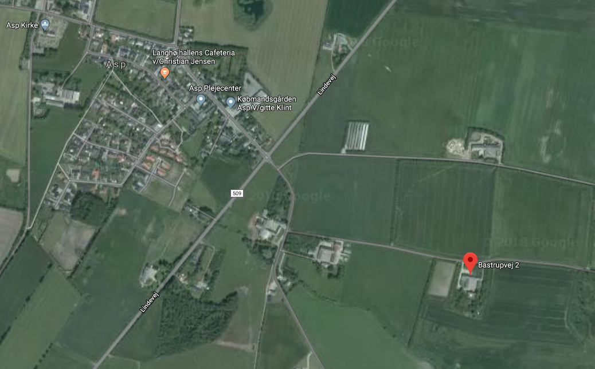
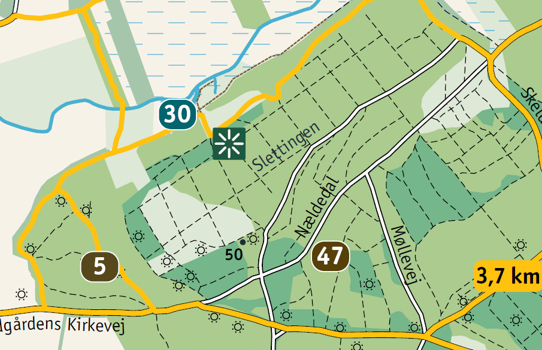

Vores navn
Vores fremtidige fælles navn er Skræddergaard Sletting. Disse er begge navne, som har en lille historie tilknyttet.
Skræddergaard
Navnet Skræddergaard stammer fra Asp syd for Struer. Familiens gård hed Skræddergaard. Om hvorvidt der har boet en skrædder på gården melder historien intet om. Vi ved dog at Nadias oldefar Ricard blev født på Skræddergaard i 1917, hvor gården havde været slægten mindst i to generationer. Senere arvede Ricards bror Skræddergaard, hvorfor Ricard flyttede til nabogården Bjerggård.
Navnet er videregivet gennem Nadias morfar Karl Kristian Skræddergaard. Der findes kun to familier med navnet Skræddergaard. Gården findes stadig.
Sletting
Navnet Sletting stammer fra Rold Skov. Området var et skovløberområde og en form for skovbrug. Området ligger lige ved siden af Lille Blåkilde. Navnet Sletting stammer sandsynligvis fra Anders Andersen Sletting (1850-1916). Han var hegnsmand og varetog området Slettingen. Dette blev med tiden en integreret del af hans navn. Første gang gang han officielt står i kirkebøgerne med navnet Sletting er i 1888 som forlover til sin broders bryllup.
Navnet er videregivet gennem Kristians farmor Gudrun Sletting Andersen.